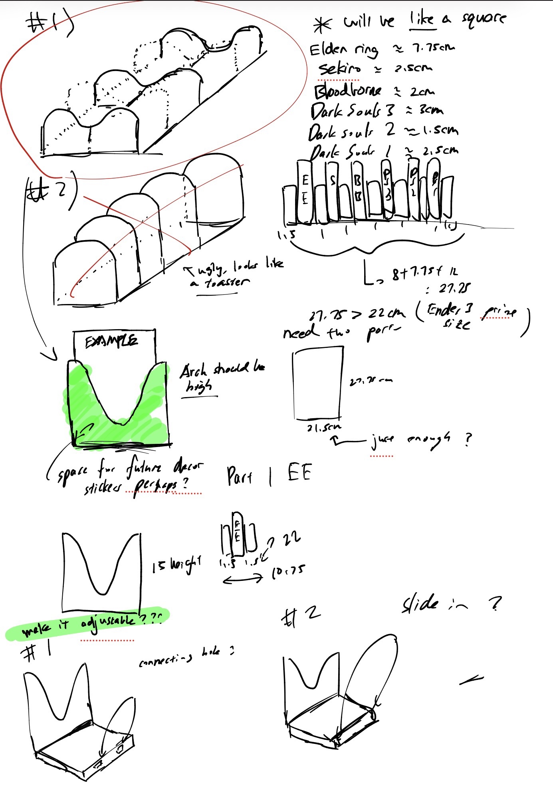
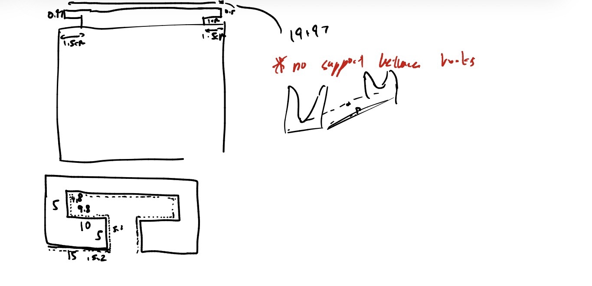
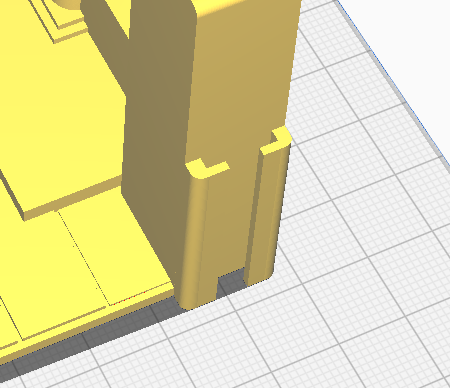
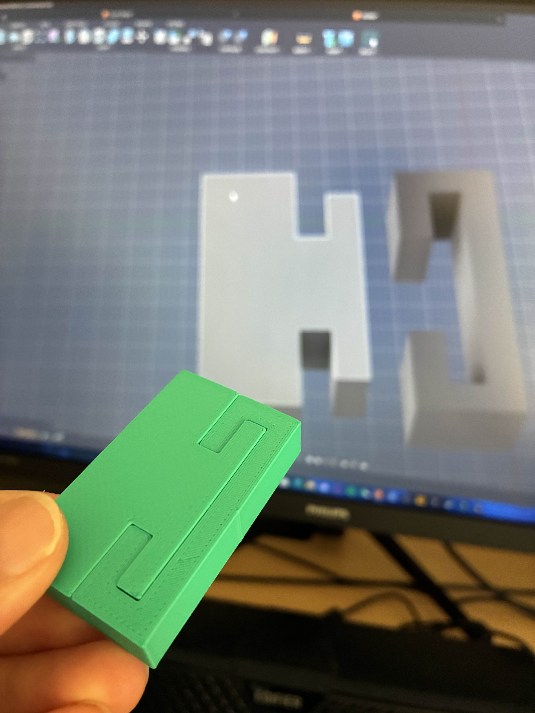
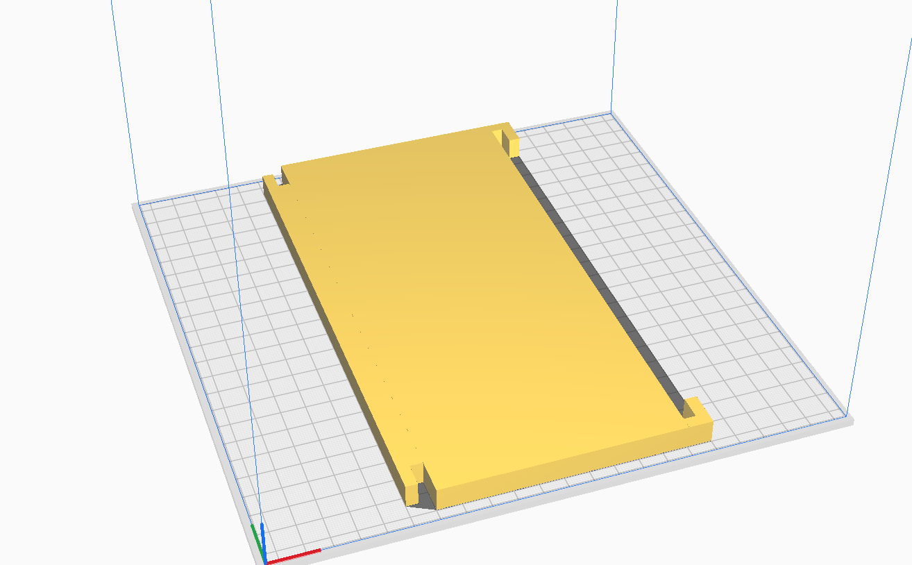

📌 Overview
I bought about 1000 yuan (212 aud) worth of Fromsoftware Books, and i need a bookshelf for it. At the start i was browsing online for cool bookshelf, but all of them are either too complicated for my old, not so high quality seconded handed ender 3 pro, too small or i just dont like the style. So i just ended designing a really simple book shelf that is also big enough to fit all my books. The bookshelf is split into two halves, with a simple joint mechanism to connect the two.
Through this small project, I developed critical thinking through measurements and designing, I also had an introduction on tolerance and joint mechanism.
Outcome: A bookshelf that is big enough for my books!


🛠️ Joint Mechanism
I took inspiration of this random bookshelf design on makerworld, it uses this joint mechanism (i dont know the name of this)

I adapted this idea into my bookshelf and it was a lot more simple.

In addition...

🏁 FINAL